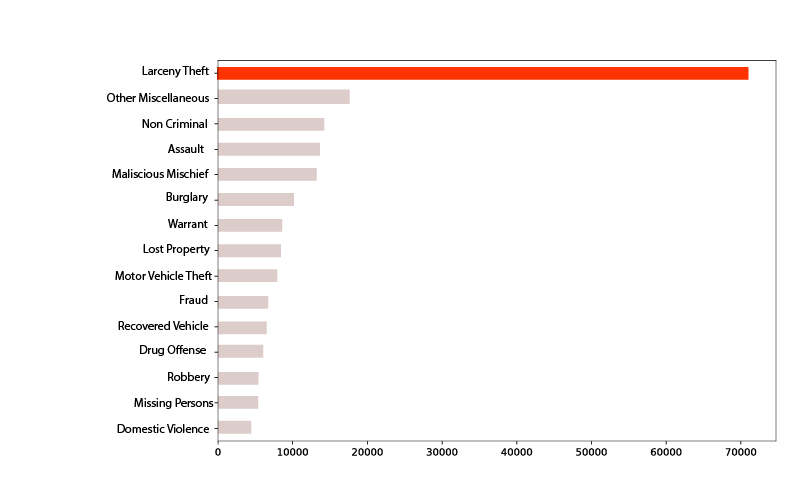
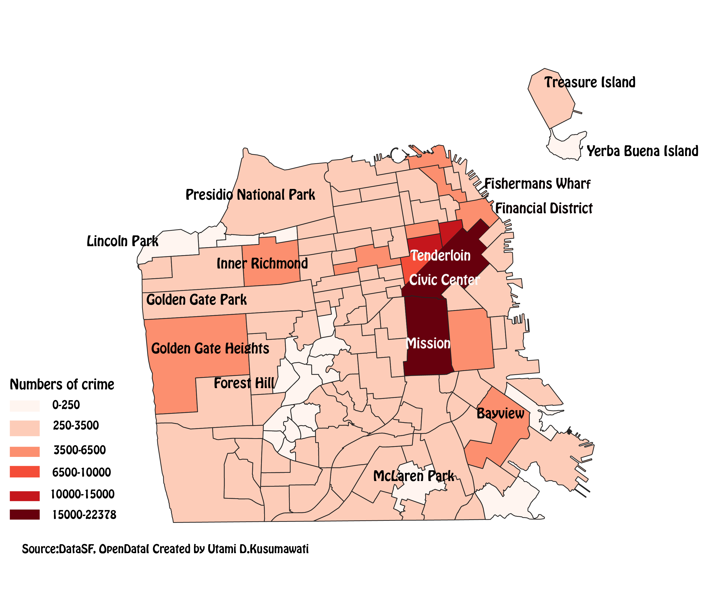
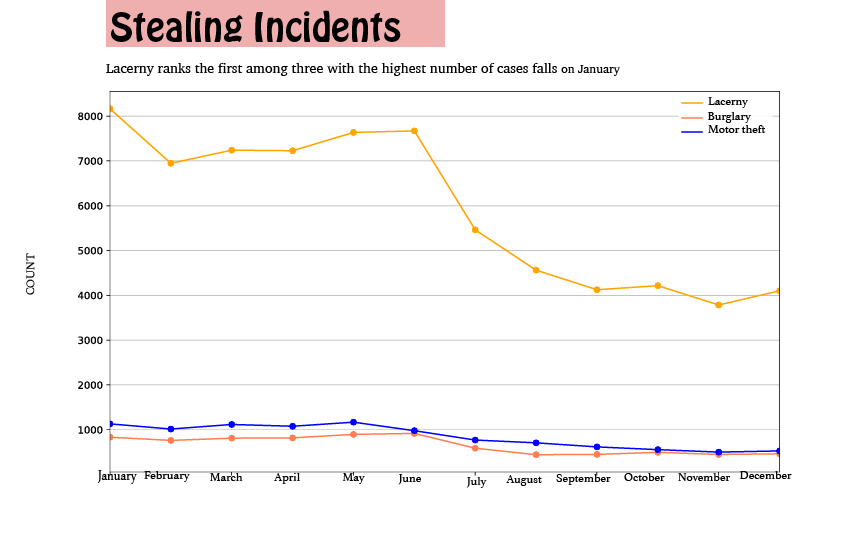
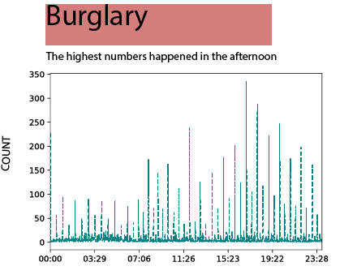
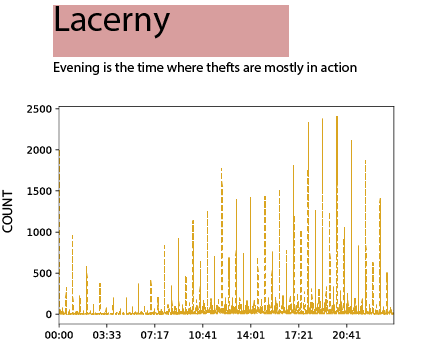
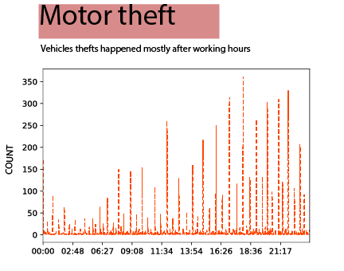
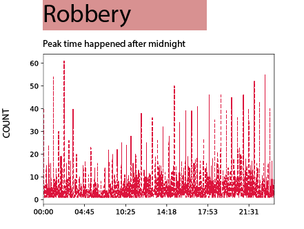
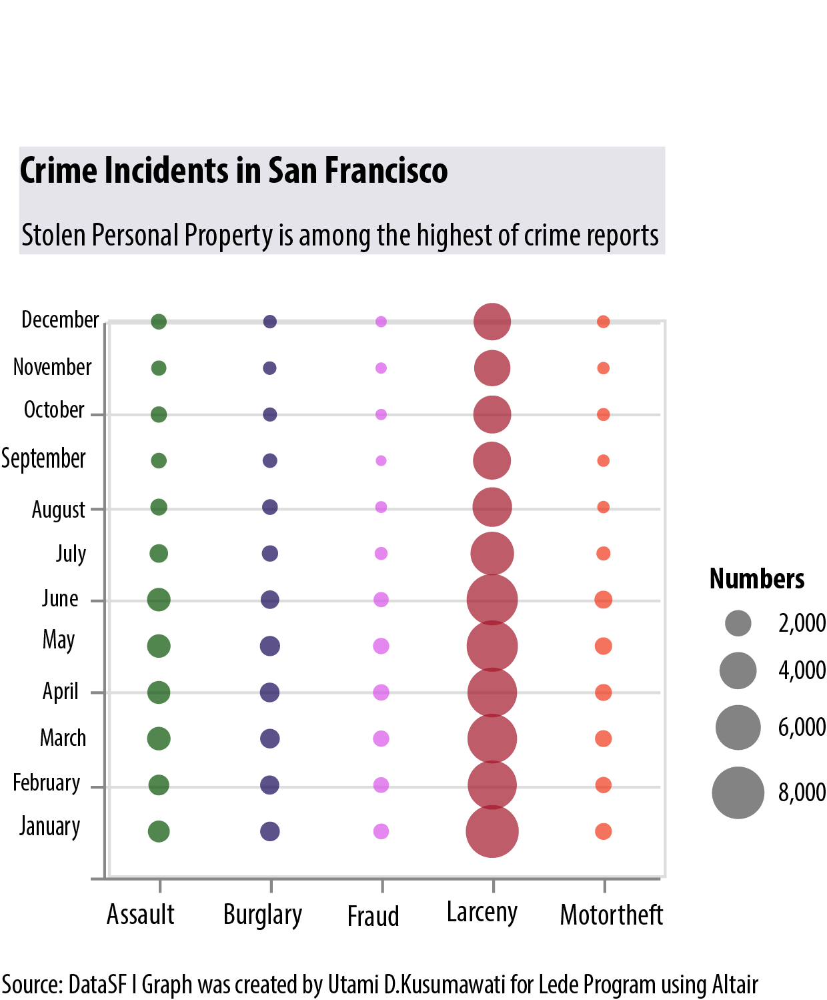

Series of visualization projects done for the Lede Program Columbia University Graduate School of Journalism

National
San Francisco Top Crimes
San Francisco has been famous for its tourism sites, from the romantic and grandeur Golden Gate Bridge to the entertaining Pier 39 where you can watch sea lions performance or eating delicious clam chowder. However, this city is also popular for its high numbers of personal property's crime in recent years, including the year of 2018. If you are planning to explore San Francisco as your next travelling destination, you may want to consider knowing a bit about the city's crime reports for precaution.
Top Fifteen Ranks
Larceny theft, or crime involving stealing personal property or cash, ranks the first place among other crime reports last year. It means that when travelling to SF, you need to be more careful to put your money. Others crimes with high numbers of reports in this city including burglary, motor vehicle theft and fraud.

Locations of Crime
The data shows locations with highest numbers of crime including Mission, Tenderloin and Civic Centre. It is followed by other districts, such as Financial District, Bayview, Fisherman Wharf, Inner Richmond and Golden Gate Heights.
Mission District has become well-known for its crime. In 2018, the local media reported several shooting and homicide incidents occured in this district.

Incidents Associated with Stealing
Minor misdemeanor act like larceny or also known as theft crime comes in the first place in term of numbers among other type of stealing-related crimes reported to the SF police office.

Time of Incidents
Based on the analyis from the 2018 crime data of DataSF, the peak of the crimes mainly occurs in the afternoon or after midnight.




Months of Stealing-related Incidents
Based on the analysis of four stealing-related crime in San Francisco, these incidents are mostly happened during summer season, especially from May to August.
